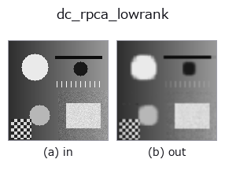

decomposition op• データ種: image → image
• 呼び出し: fullseye.apply(img, "dc_rpca_lowrank", a=0.5, b=0.5) (2-D は 1 画像 + 2 スカラつまみ a,b∈[0,1] のモデル)

*図は合成の入力 128×128 で実際に走らせた出力。左が入力、右が出力。点群は上から見た散布(明るさ = z)、1-D 列は折れ線、体積は z 方向の最大値投影、動画は中央フレーム、複素画像は振幅、絵にならない返り値は値そのもの。*
つまみ a を振る(0.1 / 0.5 / 0.9、もう一方は既定):
▸ dc_rpca_lowrank: knob a sweep (docs site)
*つまみ b は出力を変えない(実測: 0.1 / 0.5 / 0.9 で同一)。*
別の画像でも(合成シーン / 写真 / 硬貨。上段が入力、下段がその出力。つまみは既定):
▸ dc_rpca_lowrank: other inputs (docs site)
*4 列目はカラー (H,W,3) の入力。この op は色を跨がずに扱える(色チャネルを 3 本目の空間軸として畳み込まない)。*
Robust-PCA low-rank (background) part.
画像行列 `M を M = L + S(低ランク L + スパース S`)に分解する
Principal Component Pursuit を inexact ALM(Lin/Chen/Ma 2010)で解き、`L`
を返す。スパース項の重みは `λ = (0.5 + 1.5*a) / sqrt(max(m, n))(m, n`
は分解時の行列寸法)で、`a が大きいほど S が疎になり、その分 L` に
残る成分(ランク)が増える。`a=0 では λ` が小さく、ほとんどの変動が
`S に吸われて L はのっぺりする。b` は未使用。反復は最大 60 回、
収束判定は `||M - L - S||_F <= 1e-7 * ||M||_F`。
長辺が 64 を超える画像は 64 に縮小して分解し、`L` だけを線形補間で元の
大きさに戻す(低ランク部は縮小に耐えるため)。入力は [0,1] の 2 次元 float64
に揃え(3 次元はチャネル平均)、返り値も同形・[0,1] に clip。全零画像は入力を
そのまま返す。BLAS のスレッド数は分解中だけ `fsthreads` で絞る(小行列の
SVD ではスレッドが多いほど遅いため)。例外時は fail-soft で入力のクリップ版が
返り、台帳に記録される。
「行や列にわたって繰り返す構造」(縞、グラデーション、周期パターン)を背景と
みなす分解なので、単一の 2 次元画像でも織物・シート・ディスプレイ画素などの
周期背景から孤立欠陥を分離するのに向く。自然画像のような非周期背景では
`L` は単なる低ランク近似で、意味のある背景にならない。対になる欠陥側は
`dc_rpca_sparse(L + (S - 0.5) == 入力`)。エッジ保存の平滑で構造を
取りたいなら `dc_structure_texture`。
• gallery2d_texture_freq ファミリ ガイド
• blas_threads_and_memory — 行列分解が遅い理由の知識 — BLAS スレッド・キャッシュ・メモリ配置
• サンプルデータ カタログ(DL URL / ライセンス) — 2-D は skimage.data(BSD/public)+ 合成、3-D は実データ源(Stanford/PDS 等)の DL URL。
• 演算子の来歴・参考文献 — この op 族の元になった研究/手法の出典。
• アルゴリズムの正典(著者・年)と用途は上記ファミリ使い方ガイドに記載。
下のプログラムは実際に走ることを確かめてある(図と同じ入力)。Studio のヘルプではこのブロックがボタンになり、その場で読み込んで実行できる。
dc_rpca_lowrank 0.50 0.50
▸ Load this pipeline · Load & run
• blas_thread_budget — py -3.11 examples/blas_thread_budget.py
• gallery2d_texture_freq — py -3.11 examples/gallery2d_texture_freq.py
image を入力に取れる)identity · gaussian · mean_box · bilateral · unsharp · median · min_filter · max_filter
decomposition)dc_structure_texture · dc_texture_residual · dc_rpca_sparse · dc_retinex · dc_local_contrast_norm · dc_homomorphic
*Provenance: ops.py — 2D operator registry. この per-op ノートは tools/opdocs.py md が自動生成(手編集しない)。*
© 2026 Kazufumi Furuse — Fullseye operator documentation. Licensed under Apache-2.0.
{kind=link}
{kind=link}